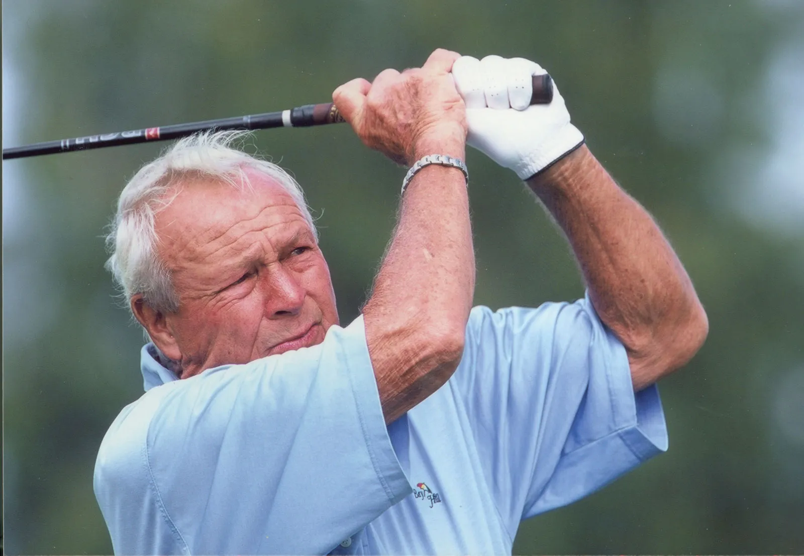
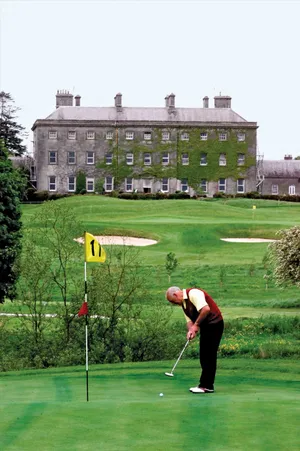

Arnold Palmer
 


img by Brittanica
Career and wealth
Arnold Palmer (born September 10, 1929, Latrobe, Pennsylvania, U.S.—died September 25, 2016, Pittsburgh, Pennsylvania) was an American golfer who used an unorthodox swing and an aggressive approach to become one of golf’s most successful and well-liked stars from the late 1950s through the mid-1960s. He was the first to win the Masters Tournament four times (1958, 1960, 1962, and 1964) and the first (in 1968) to earn $1 million in tournament prize money. During his professional career (1954–2006), he won 92 tournaments, 62 of which were on the Professional Golfers’ Association of America (PGA) Tour. As a leading figure in world golf, he attracted a vast following known as Arnie’s Army. His company Arnold Palmer Enterprises, with the unmistakable umbrella logo, has made him one of the highest-paid sporting stars in history. During his colourful life, Palmer took advantage of a whole host of business opportunities, designing over 300 courses and signing a number of lucrative endorsement deals.